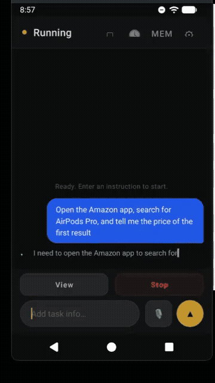
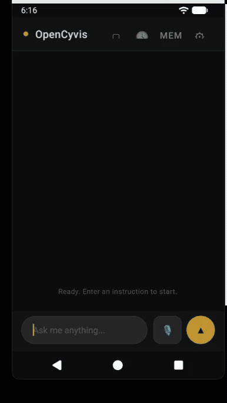

Background
Over the past year, several companies have launched "AI phone" products — Doubao, Samsung Galaxy AI, Google's Gemini integration, and others. The core idea is the same: AI understands the screen and performs tasks on behalf of the user.
But these products share a common trait: they're all closed. The model is chosen by the vendor. Your data is processed through the vendor's servers. You can't audit what happens in between, and you can't swap in a model you trust.
The open-source community has made attempts too — various ADB-based PhoneUse projects, for example. They let you choose your own model, but they require a computer connection, and the AI takes over your screen while it works.
OpenCyvis addresses both problems.
Core Design
Open Source + Model Choice
This is the most important point of the entire project.
An AI that can see your screen and operate your apps is, by nature, the most privileged piece of software on your phone. What model it runs, who receives the screenshots, what happens to the data at each step — users should be able to verify all of this, not just take the vendor's word for it.
OpenCyvis's approach: all code is open source, and the LLM backend is configured by the user. Three provider types are currently supported:
| Provider Type | Examples | Notes |
|---|---|---|
| OpenAI-compatible API | Qwen, GPT | Default — connects to any OpenAI-compatible endpoint |
| Anthropic API | Claude Sonnet | Native Anthropic protocol |
| Ollama (local) | Gemma 4, Llama, Qwen | Model runs on-device; screenshots never leave the phone |
With a local model, the entire pipeline — screenshot, reasoning, execution — runs entirely on-device with zero network requests.
How the Agent Sees and Acts
At its core, OpenCyvis runs an observe → think → act loop. On every step, the model receives two types of input simultaneously:
Screenshot + UI Element Tree (Dual-Channel Perception)
Most open-source phone agents rely solely on screenshots — the model "sees" the screen and guesses where to tap. This vision-only approach frequently misses targets on complex UIs.
OpenCyvis provides both inputs simultaneously: the screenshot gives the model semantic understanding of the current interface and its layout, while the UI element tree (Accessibility Tree) provides the exact coordinates, type, and hierarchy of every widget. The two are complementary — visual information answers "what is this?", structural information answers "where is it?"
Native Tool Calling (14 Action Types)
Many open-source agents have the model output free text (e.g., "please tap the button in the middle of the screen"), then parse coordinates and actions with regex — a brittle and error-prone approach. OpenCyvis uses the LLM's native function calling protocol, where the model returns structured JSON action instructions directly. Supported actions include:
- Interaction: tap, long_press, swipe, type_text, key_event (back/home/enter, etc.), open_app
- Flow control: wait (wait for page load), finish (task complete), fail (cannot complete)
- Dialogue: ask_user (ask the user a question), handoff_user (return control)
- Memory: note (working memory), remember (cross-task persistent memory)
This design ensures the model's output is always parseable and verifiable. There is never a "the model said something but the system didn't understand" scenario.
Working Memory (Note)
During multi-step operations, the model may need to carry intermediate information — for example, finding a price in one app and comparing it after switching to another. OpenCyvis provides a note mechanism: the model can attach a note to any action, recording key information. These notes are fed back as context in every subsequent step's prompt, essentially giving the AI a scratchpad. Up to 10 notes are retained, with FIFO eviction.
There's also a remember mechanism for cross-task persistent memory — for example, if the user says "my delivery address is XX", the model can store it and use it directly the next time a similar task comes up.
Virtual Display: Background Operation
Currently, the open-source AI phone / phone automation community has two main technical approaches:
ADB approach: Control the phone externally via USB or network using adb shell input and screencap. The advantage is no system modification required. The downside: it requires a computer, and operations happen directly on the user's active screen — the user can't use their phone while the AI works.
Accessibility Service approach: Use Android's accessibility service to read the UI tree and perform actions. No computer needed, but it still operates on the foreground display, and the accessibility service permission model has limitations — some system operations and protected screens are unreachable.
Both approaches share the same fundamental problem: the AI and the user share the same screen. When the AI is working, the user either waits or watches their phone being controlled by someone else.
What is VirtualDisplay?
VirtualDisplay is a native Android API that allows creating additional logical displays within the system. Its original use cases include Chromecast screen mirroring, split-screen mode, and Android Automotive multi-display. Each VirtualDisplay has an independent display ID, and apps can be migrated to any Display to run independently.
OpenCyvis leverages this mechanism to create an invisible background Display within the system. The app the AI needs to operate is migrated to this background Display, and all of the AI's screenshots and touch injections target this Display. The user's foreground screen (Display 0) is completely unaffected.
Implementation details:
- Background display created via
DisplayManager.createVirtualDisplay() - Target app migrated via reflection call to
IActivityTaskManager.moveTaskToDisplay() - Screenshots captured using
SurfaceControl.screenshot(displayId)(API 36+) with ImageReader fallback - Touch injection via
InputManager.injectInputEvent()targeting the virtual displayId - Watch mode: SurfaceView renders VirtualDisplay content; Takeover mode: touch events are forwarded to the background Display
These operations require platform signing to obtain permissions like INJECT_EVENTS, so OpenCyvis must be signed with the platform key and integrated into the system image.

While the AI works in the background, a floating overlay appears on your home screen showing it's active. When the task completes, a notification pops up so you know it's done.

Comparison with Existing Approaches
| Feature | Commercial AI Phones | Cloud Phones | ADB-based | OpenCyvis |
|---|---|---|---|---|
| Open source | No | No | Partial | Yes |
| User chooses model | No | No | Partial | Yes |
| Local model support | No | No | Partial | Yes |
| Phone usable while AI works | Varies | Yes | No | Yes |
| No ADB / computer needed | Yes | Varies | No | Yes |
Local Model Benchmarks
We tested 6 local models across 4 real-world scenarios (open system settings, dial a phone number, recognize an impossible task, find a contact):
| Model | Architecture | Size | Speed | Pass Rate |
|---|---|---|---|---|
| Gemma 4 26B-A4B Q4 | MoE (26B/4B) | 17 GB | 63 tok/s | 4/4 |
| Gemma 4 E2B Q4 | Dense (2B) | 1.8 GB | 41 tok/s | 4/4 |
| Qwen 3.5 35B-A3B Q4 | MoE (35B/3B) | 22 GB | 47 tok/s | 3/4 |
| Gemma 4 E4B Q4 | Dense (4B) | 3 GB | 61 tok/s | 3/4 |
| GUI-Owl 1.5 8B Q4 | Dense (8B) | 5.4 GB | 75 tok/s | 2/4 |
| GUI-Owl 1.5 32B Q4 | Dense (32B) | 20.5 GB | 23 tok/s | 2/4 |
A few noteworthy conclusions:
- Gemma 4 E2B is only 1.8 GB, yet passed all 4 tests. For everyday tasks, small models are already capable enough.
- GUI-Owl is a model specifically trained for GUI operations, but it actually underperformed compared to general-purpose models in our scenarios. The reason: it doesn't proactively ask the user when uncertain — general-purpose models' tool calling and reasoning capabilities matter more in practice.
- The MoE architecture (Gemma 4 26B-A4B) strikes a good balance between speed and quality, and is currently the recommended default local model.
Foundation model capabilities are advancing rapidly. Just last year, locally deployable open-source models couldn't support this kind of application — understanding complex phone interfaces, planning multi-step operations, making reasonable judgments under uncertainty. But this year, the new generation of models represented by Gemma 4 can handle these tasks locally with ease. A 1.8 GB model passing all tests would have been unimaginable a year or two ago.
We've also observed that some commercial AI phone products build extensive engineering scaffolding on top of the model — dedicated intent recognition systems, predefined task templates, step-by-step workflow orchestration, and so on. These designs were necessary compensations when model capabilities were insufficient. But as foundation models' reasoning and tool-calling capabilities continue to strengthen, many of these constraints are becoming unnecessary. The model itself can understand intent, plan steps, and call tools — there's no need to wrap an additional layer of hardcoded logic around it.
This is also OpenCyvis's design choice: minimize engineering constraints, and let the model handle the core capabilities. Models will keep improving; hardcoded rules will only become baggage.
About the Name
OpenCyvis = Open Cyber Jarvis.
Jarvis is Tony Stark's AI butler in Iron Man — understanding the owner's intent and operating various systems to complete tasks. We think this image fits perfectly: an AI phone is essentially a digital assistant that understands your instructions and operates your phone to get things done. "Cyber" emphasizes it lives in the digital world, and "Open" means everything is transparent.
What's Next
Currently, OpenCyvis requires flashing an AOSP system image because it depends on platform signing permissions. This is the biggest barrier to adoption.
Next directions:
- Lighter installation — exploring approaches that don't require flashing a ROM, lowering the barrier to entry
- Cross-device coordination — phone and desktop working together
Vision
An AI phone should be public infrastructure, not a proprietary product of any single company. Our goal is to establish an open mobile AI standard — so that everyone can own, audit, and control their own AI assistant.